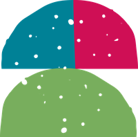
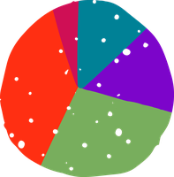
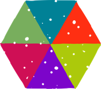
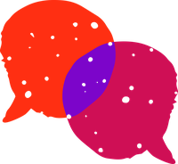
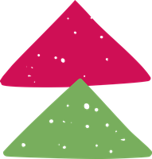

Ideas for care-experienced people become work that lasts.
A 12-month entrepreneurial leadership programme for anyone over 18 who is care-experienced or works with care-experienced people, and has an idea, project or business that solves problems for care-experienced people. Your idea doesn’t need to be polished.

The Fellowship in plain English
What we offer, what we do, what you get and what it is for.
The offer
A 12-month programme for people building something that solves problems for care-experienced people. It starts in March 2027.
What we do
Two four-day retreats, a two-hour online session every month, and the 5S leadership framework, worked through with a cohort of lived and professional leaders.
What you get
A clearer idea, a plan to deliver it, a framework you can keep using, and a network of people doing the same thing.
What it achieves
More good ideas for care-experienced people turned into projects and businesses that last.

Fellows arrive with an idea and leave with a plan to make it last.
Plenty of good ideas for care-experienced people never get past the first year. The Fellowship gives the people behind them a year of time, structure and company: two retreats, a monthly session and a framework that takes an idea from the story behind it to who will lead it next.
At a glance

A 12-month programme for people building something for care-experienced people, with lived and professional experience in the same room.

Who can applyAnyone over 18 who is care-experienced or works with care-experienced people- What you needAn idea, project or business that solves problems for care-experienced people
- How long12 months, starting March 2027

TimeAbout four hours a month
RetreatsTwo four-day retreats, in March and September
OnlineA two-hour session every month
ApplicationsOpen in November 2026- Run byThe Care Leaders Fellowship CIC

The 5S leadership framework
Five stages that take an idea from the story behind it to who will lead it next. Choose any S to see what fellows work on.
Storytelling
How to tell the story of your idea, and your own story if you choose to, so funders, partners and the people you want to reach understand why it matters.
You work on
- The story behind your idea
- Who it is for and what changes for them
- Telling it in a pitch, a post or a meeting
Skills
The entrepreneurial and leadership skills to move an idea forward, and an honest look at the skills you have and the ones you need to find.
You work on
- Your strengths as a leader
- The gaps, and who could fill them
- Leading other people
Strategies
Turning an idea into a plan: who it is for, how it will reach them, and how it will be paid for.
You work on
- Your plan for the next year
- How the idea is funded
- Partners who can help
Scaling or sustaining
Not every idea needs to get bigger. You decide whether to grow your work or make it secure where it is, and what each route needs.
You work on
- Choosing your route
- What growth would need
- What keeping it going would need
Succession planning
Planning for the work to carry on without depending on one person, including you.
You work on
- Who could lead it next
- Writing down how it works
- A plan for handing on
Your year
Twelve months, from March 2027.
- 1
Apply
Applications open in November 2026.
- Tell us about you and your idea
- Your idea doesn’t need to be polished
- 2
Interview
Interviews from 18 to 29 January 2027.
- Decisions on 5 February 2027
- 3
Retreat one
The Fellowship starts with a four-day retreat in March 2027.
- Meet your cohort
- Start the 5S framework
- 4
Every month
A two-hour online session with your cohort.
- About four hours a month in total
- Work on your idea between sessions
- 5
Retreat two
A second four-day retreat in September 2027.
- Take your work further
- Plan what happens next

What fellows get
A community
A cohort of lived and professional leaders working on the same kind of problem.
A learning programme
The 5S framework, worked through over the year.
Two retreats
Four days in March and four in September, away from the day job.
Entrepreneurial coaching
Support to move your idea forward.
Digital marketing support
Help to get your idea seen by the people it is for.
Fundraising support
Help to find and make the case for funding.


For councils and organisations
Sponsor a place for a care-experienced leader in your area, or for someone in your team building something for care-experienced people. Young people who have been through The Care Leaders Academy can grow into the Fellowship as adults.
Previous work
Fellows led sessions at The Care Leaders Summit.

Questions people ask
Who can apply?
Anyone over 18 who is care-experienced or works with care-experienced people, and has an idea, project or business that solves problems for care-experienced people.
Does my idea need to be developed?
No. Your idea doesn’t need to be polished.
How much time does it take?
About four hours a month, plus two four-day retreats.
When are the dates?
Applications open in November 2026. Interviews run from 18 to 29 January 2027, with decisions on 5 February 2027. The Fellowship starts in March 2027.
Who runs it?
The Care Leaders Fellowship CIC.
Can my organisation sponsor a place?
Yes. Councils and organisations can sponsor a place for a care-experienced leader in their area, or for someone in their team building something for care-experienced people. Talk to us.

Be first to hear when applications open
Leave your details and we’ll email you when applications open in November 2026, with the Fellowship brochure.